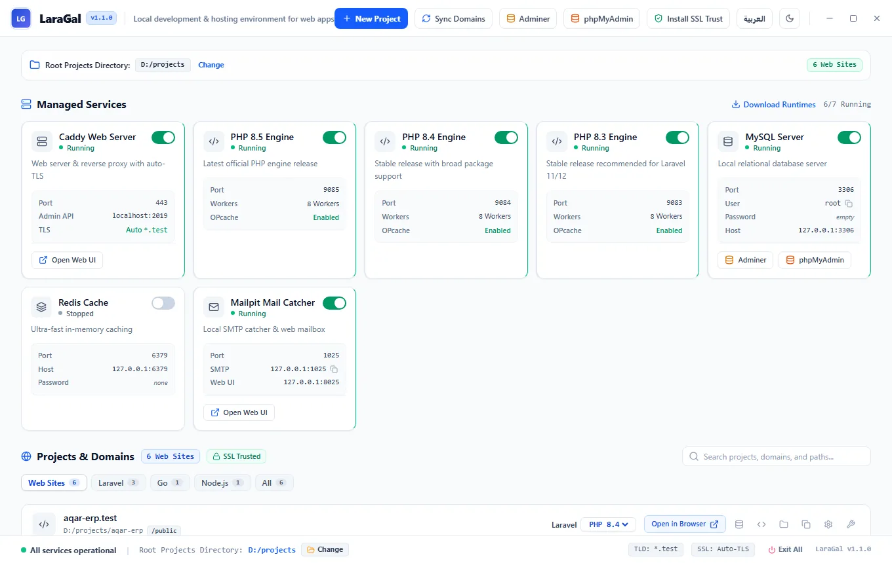
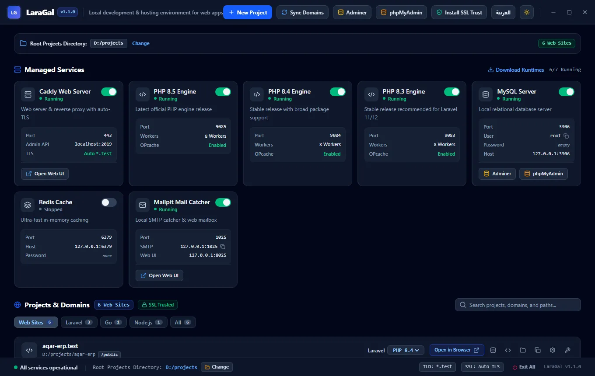

Caddy:443
Web server and reverse proxy. Issues a certificate for every .test domain from a local authority and reloads its config when you add a project, without stopping the other sites.
LaraGal bundles the Caddy web server with trusted local HTTPS certificates, several PHP versions running together, MariaDB, Redis, Mailpit and phpMyAdmin in one app. Point it at your projects folder and each project gets its own domain.


Each service is a separate process watched by the app, and you start or stop it from its card. Logs are kept per service in data\logs.
Web server and reverse proxy. Issues a certificate for every .test domain from a local authority and reloads its config when you add a project, without stopping the other sites.
Each version has its own FastCGI port with OPcache, so one project can run on 8.3 while another runs on 8.5. Version 8.1 is end-of-life (EOL), and new versions appear from the official source. Switch versions from the project row.
MySQL-compatible database bound to 127.0.0.1. The app finds .sql files inside a project, imports them, and points the project's .env at the database.
Two database tools, opened from the MySQL card or the window header. The database button on a project row opens that project's database in Adminer.
Catches every email your app sends over SMTP and shows it in a local inbox, so test messages never reach real people.
For cache, queues and sessions; stopped by default. The bundled build is end-of-life (EOL), and a maintained build can be installed after confirmation.
The app reads each folder inside your projects folder and decides how to serve it. PHP projects go through FastCGI; the others get a reverse proxy to the app's port, or their static files are served directly.
| Type | Detected by | Served as |
|---|---|---|
| Laravel | artisancomposer.json | PHP FastCGI, document root public |
| WordPress | wp-config.phpwp-load.php | PHP FastCGI |
| PHP | index.php | PHP FastCGI |
| Go | go.mod | Reverse proxy to the app port |
| Rust | Cargo.toml | Reverse proxy |
| .NET | *.csprojProgram.cs | Reverse proxy, static files from wwwroot |
| Python | manage.pyrequirements.txt | Reverse proxy |
| Ruby | Gemfileconfig.ru | Reverse proxy |
| Java | pom.xmlbuild.gradle | Reverse proxy |
| Node.js | package.json | Static dist or build output, or a proxy to the dev server |
| Flutter Web | build/web/index.html | Static files |
Built-in utility panels to inspect responsiveness and verify accessibility without leaving your development environment.
Preview active sites across standard viewport widths: mobile (375px), tablet (768px), and full desktop width.
The preview checks framing headers (X-Frame-Options and CSP frame-ancestors) and explains when a project disallows iframe embedding, offering a button to open it in your browser.
Evaluates color contrast ratios between text and background in real time under WCAG 2.x guidelines.
Displays compliance ratings for both AA and AAA thresholds for normal and large text to ensure readable interfaces.
Curated quick-access links to typography pairings, color palette generators, and accessibility references.
Provides direct links to design guidelines to support building clear, accessible user interfaces.
Every managed runtime checks its official upstream source directly, and nothing is downloaded without checksum verification.
Services check official distribution channels and verify the published SHA-256 digest before installing:
releases.json on windows.php.net. New minor releases such as 8.6 appear automatically as they are released.mariadb-upgrade.phpmyadmin.net with SHA-256 verification, showing a compatibility note if the active PHP version is outside the supported range.Upgrades involving a different major version or a provider change require explicit confirmation in a dialog before anything changes.
This includes moving Adminer from 4.8.1 to 6.x, upgrading Redis to a maintained build such as redis-windows 8.x, or upgrading to a new MariaDB LTS series.
Installations are atomic: packages extract into a temporary staging folder while preserving existing configuration files such as php.ini, my.ini, and redis.conf.
The previous installation is restored automatically if an error occurs, and database files are never deleted during cleanup or upgrades.
LaraGal itself does not include an automatic background updater or update notifications.
New application versions are published on GitHub Releases and installed manually by replacing the executable.
There is no installer. Unzip it into any folder you can write to.
From the GitHub releases page, then unzip it.
It asks for administrator rights once, to edit the hosts file and install the local certificate.
For example D:\projects. Each project shows up with its domain, type and PHP version.
A project in a folder named shop opens at https://shop.test with a certificate the browser trusts.
A dev environment runs with elevated rights, so here is every change it makes.
127.0.0.1 and ::1 only, so they are not reachable from the local network.data\mysql if you want to move them.Didn't find your answer? Open an issue in the repository.
Yes for development, testing, education and non-commercial use under the Business Source License 1.1. Offering it to third parties as a competing product or service needs a commercial license. Four years after each release, that release becomes Apache 2.0.
To edit the hosts file so .test domains resolve, and to install the local certificate into the trusted store.
Yes. Each version runs on its own port, and you choose a project's version from the dropdown in its row.
Most likely Windows Defender scans each PHP file the first time it is opened, and the first Laravel page opens hundreds of them. On a machine with an NVMe drive, reading 800 files took 14 seconds and dropped below one second after adding an exclusion.
Run this in an elevated PowerShell, adjusting the paths to your machine:
Add-MpPreference -ExclusionPath 'D:\projects', 'D:\laragal\bin'An exclusion means Defender stops scanning those folders, so limit it to folders whose contents you trust.
The app shows a warning at startup when the port is taken. Find the process with netstat -ano | findstr :443, stop IIS or any other web server, then restart Caddy from its card.
The current release is Windows only. Parts of the code are written to be portable, but there is no build for other systems yet.